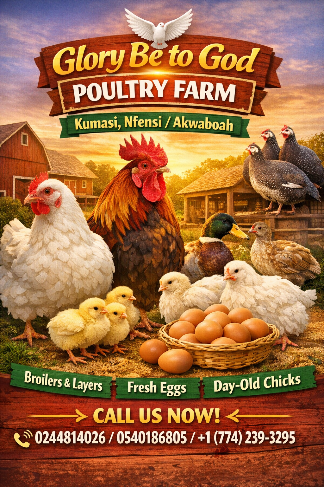
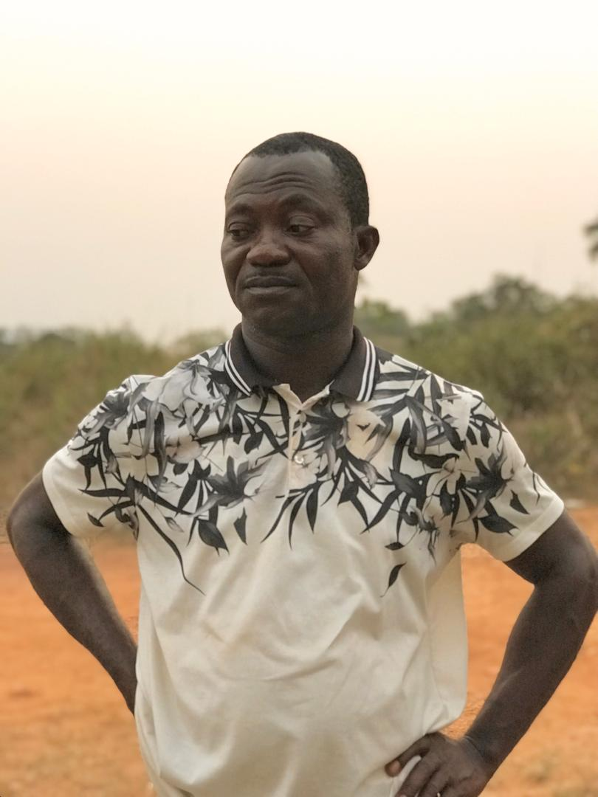
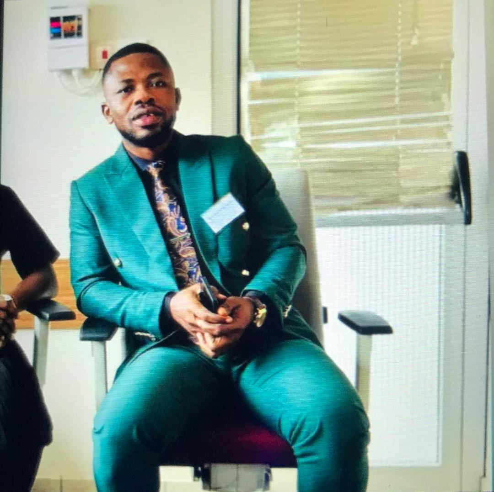

Hi, I’m Monica Osei the CEO of Glory be to God Poultry Fram. As the Chief Executive Officer of my Poetry Farm, I see myself not only as a leader but also as a cultivator of creativity. Just as a farmer tends to the soil, plants seeds, and nurtures crops, I dedicate my energy to cultivating words, ideas, and emotions. My farm is not made of acres of land but of verses, stanzas, and metaphors. Each poem is a seed that, when nurtured with imagination and discipline, grows into a harvest of meaning that can nourish the hearts and minds of readers. Leadership in a Poetry Farm requires vision and organization. I oversee the processes of planting inspiration, watering creativity, and harvesting finished works. This means guiding fellow poets, organizing workshops, and creating platforms where voices can flourish. My role is to ensure that the farm remains fertile ground for innovation, where traditional forms like sonnets coexist with experimental free verse. By balancing structure with freedom, I maintain harmony between the farm’s roots and its future growth. The portfolio of my Poetry Farm is rich with diverse harvests. Some poems bloom like flowers, delicate and short-lived, while others stand tall like trees, offering shade and wisdom for generations. I categorize my works into “seasonal harvests”: spring poems full of hope, summer verses bursting with passion, autumn reflections tinged with nostalgia, and winter lines that carry quiet strength. This seasonal rhythm reflects the cycles of human experience and ensures that my farm produces poetry that resonates across moods and moments. Beyond the creative harvest, my Poetry Farm has a social mission. Just as farmers feed communities, I believe poetry should nourish society. Through readings, collaborations, and outreach programs, I distribute the farm’s produce to schools, cultural centers, and digital platforms. My goal is to make poetry accessible, reminding people that words can heal, inspire, and unite. In this way, my farm is not only a business but also a service to humanity, cultivating empathy and understanding. Ultimately, my portfolio as CEO of a Poetry Farm is a testament to the power of imagination and leadership combined. It shows that poetry, when managed with care and vision, can be more than personal expression—it can be a collective harvest. By tending to the fields of language, I ensure that the farm continues to thrive, producing works that enrich both individual lives and the broader cultural landscape. My role is to keep the soil fertile, the seeds growing, and the harvest abundant, so that poetry remains a living, breathing force in the world.

>Hi, I’m Dacosta Owusu,the manager of Glory be to God Poultry Fram. As the manager of a Poetry Farm, I see my role as one of guidance, organization, and nurturing. Just as a farm manager ensures that the land is cultivated properly and the crops are tended with care, I oversee the creative processes that allow poetry to flourish. My responsibility is to create an environment where words can grow freely, while also maintaining the discipline and structure needed for a successful harvest of ideas. Managing a Poetry Farm requires balancing creativity with practicality. I organize schedules for writing workshops, coordinate collaborations among poets, and ensure that resources are available for inspiration. Like a farmer who knows when to plant and when to harvest, I help writers recognize the right time to develop their ideas and bring them to completion. This balance between freedom and structure is the foundation of my management style. The portfolio of my Poetry Farm reflects the diversity of its harvest. Some works are short and delicate, like haiku blossoms, while others are expansive and enduring, like epic narratives. I categorize these creations into thematic fields—love, nature, society, and innovation—so that readers can explore the farm’s produce in an organized way. This system not only highlights the richness of our work but also demonstrates my ability to manage creativity with clarity and purpose. Beyond the creative output, my role as manager extends to community engagement. A farm does not exist in isolation, and neither does poetry. I ensure that our harvest reaches audiences through readings, publications, and outreach programs. By connecting with schools, cultural centers, and online platforms, I distribute the fruits of our labor to nourish minds and inspire hearts. This outward focus strengthens the farm’s impact and ensures that poetry remains a shared experience. Ultimately, my portfolio as manager of a Poetry Farm is a testament to leadership in creativity. It shows that poetry, when carefully managed, can thrive like crops in fertile soil. My role is to keep the farm organized, the poets inspired, and the harvest abundant. By blending vision with discipline, I ensure that the Poetry Farm continues to grow, producing works that enrich both individuals and communities.

Hi, I’m Joseph Offair, the assistant manager of Glory be to God Poultry Fram. Working as an Assistant Manager at a poetry farm has been a unique and enriching experience. Unlike traditional farms, a poetry farm cultivates creativity, imagination, and artistic expression. My role has required me to balance administrative responsibilities with creative engagement, ensuring that both the operational and artistic sides of the farm thrive. This position has allowed me to develop leadership skills while also nurturing my passion for literature and the arts. One of my primary responsibilities has been coordinating daily activities on the farm. This includes organizing poetry workshops, managing schedules for visiting writers, and overseeing events that bring together poets and audiences. I have also assisted in maintaining the farm’s archives, where we store collections of poems produced by our community. These tasks have taught me the importance of time management, attention to detail, and teamwork in sustaining a creative environment. Beyond administration, I have played an active role in fostering creativity among participants. I often collaborate with poets to design themes for workshops, encourage young writers to share their voices, and help curate exhibitions of written and spoken poetry. By supporting these creative processes, I have learned how to motivate others, build confidence in emerging talents, and create spaces where art can flourish. This aspect of my work has been deeply rewarding, as I see the farm grow not only in productivity but also in artistic impact. Another significant part of my portfolio is community engagement. The poetry farm is not just a workplace; it is a cultural hub that connects people through words and imagination. I have worked on outreach programs that bring poetry to schools, local festivals, and rural communities. These initiatives have strengthened my communication skills and taught me how to adapt artistic expression to diverse audiences. They also highlight the farm’s mission of making poetry accessible and meaningful to everyone. In conclusion, my role as Assistant Manager of a poetry farm has been a journey of growth, creativity, and leadership. I have gained valuable experience in administration, event coordination, and community outreach, while also contributing to the artistic vision of the farm. This portfolio reflects not only my professional skills but also my dedication to promoting poetry as a vital part of cultural life. I believe that the lessons I have learned here will continue to shape my career and inspire me to support creative endeavors wherever I go.